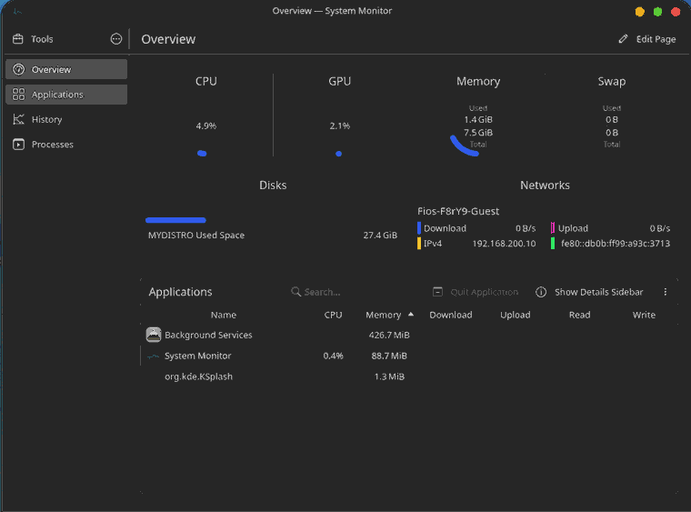

Windows · Task Manager

A side-by-side look at CPU and memory use on an 11th Gen Intel Core i5-1135G7 system, with both operating systems sitting idle and no user applications running.

These are the values visible in the two screenshots, captured while both systems were idle.
| Measurement | Windows | NoahOS |
|---|---|---|
| CPU utilization | 23% | 4.9% |
| Memory in use | 6.2 / 7.7 GB | 1.4 / 7.5 GiB |
| Displayed memory usage | 81% | ~19% |
| Process count | 187 | Not shown |
Both screenshots were taken on the same laptop while idle, with no user applications running. They are point-in-time readings, not a controlled benchmark. The screenshots come from different system monitors and report memory using different units (GB and GiB), so the figures are not perfectly identical measurements. Uptime, background services, drivers, hardware support, and system state can all affect resource use. Results will vary across machines and configurations.
Learn more about the project and follow its development.
Back to NoahOS